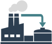
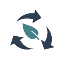

Efficient and sustainable maritime infrastructure for CCS logistics in the Nordic and Baltic countries
A transnational research project developing sustainable, cost-effective and energy-efficient CO₂ transport solutions across the Nordic and Baltic region.
Explore the projectProject at a glance
Nov 2028
of Sweden
Denmark • Latvia
Joint Call 2024 Co-funded by the
European Union
About the project
Maritime logistics for future CCS value chains
LogiCCS brings together research organisations, universities and industry partners to investigate future maritime CO₂ logistics, infrastructure requirements and sustainability aspects of CCS in the Nordic and Baltic region.
Project Objectives
Efficient CCS logistics
Investigate efficient maritime logistics concepts for CO₂ transport in the Nordic and Baltic region.

Future infrastructure
Study transport chains, vessel concepts and infrastructure requirements for future CCS deployment.

Sustainability
Assess environmental, economic and social aspects of maritime CCS logistics.
Policy & Regulation
Investigate regulatory frameworks and identify barriers and opportunities for cross-border CCS.
Consortium
Project partners
The LogiCCS consortium brings together partners from Sweden, Norway, Denmark and Latvia, combining expertise in CCS, maritime logistics, ship design, sustainability, policy, technology development and industry.
News
Latest news
Project updates will be published here
News, events and milestones from LogiCCS will be shared on this website.
Project website launched
The official LogiCCS website is being developed and will be updated as the project progresses.
Publications & Results
Project outputs
No publications available yet
Scientific publications, public reports, policy briefs and project results will be listed here as they become available.
Contact